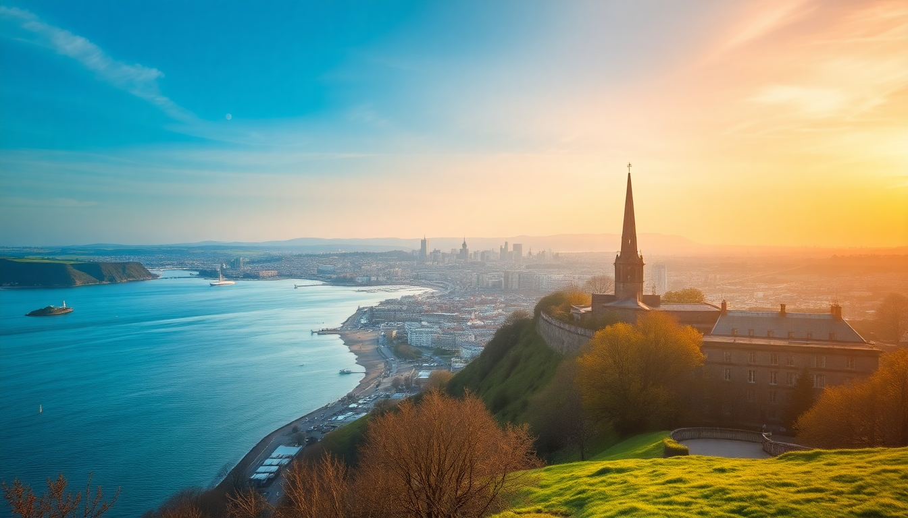

Best UK Cities to Visit: London, Edinburgh & Manchester

So you’ve got a week or ten days to spend in the UK, and you want to hit three cities without burning out. I’ve done this exact loop twice — once as a first-timer trying to see everything, and once with a smarter, slower approach. London, Edinburgh, and Manchester each have a completely different vibe, and the train connections between them are fast enough that you don’t have to fly. Here’s what I learned about where to stay, what to actually do, and what to skip.
Why visit London, Edinburgh, and Manchester together?
These three cities cover the UK’s range better than any other trio. London is the sprawling, global capital with museums that take days to explore. Edinburgh is compact, hilly, and medieval — it feels like a storybook that’s still being written. Manchester is the industrial-revival underdog: gritty, creative, and way more affordable. I found that moving between them by train (London to Manchester in about 2 hours, Manchester to Edinburgh in about 3.5) let me see real regional differences without losing a whole day to transit.
What is the best way to get between these cities?
Book your trains direct on Avanti West Coast or LNER. I used the Avanti line from London Euston to Manchester Piccadilly, and then LNER from Manchester to Edinburgh Waverley. If you book at least two weeks ahead, a standard single from London to Manchester runs about £35-50. Same-day walk-up prices can hit £120, so don’t gamble.
- London to Manchester: 2 hours 10 minutes on Avanti West Coast. Sit on the left side for views of the Peak District near Stockport.
- Manchester to Edinburgh: 3 hours 30 minutes on TransPennine Express or LNER. The stretch past the Lake District is worth a window seat.
- London to Edinburgh direct: 4 hours 30 minutes on LNER, but I’d break it in Manchester anyway — the train gets boring by hour three.
Skip the bus. Megabus is cheap but takes 8+ hours between London and Edinburgh, and you’ll arrive cranky.
What should I do in London without feeling overwhelmed?
London is too big to “do” in three days, so pick a couple of neighborhoods and commit. I stayed near South Kensington the first time (convenient for museums) and near Borough Market the second time (better for food and walking). My rule: one major attraction per day, plus a neighborhood walk.
- Borough Market — arrive before 10am to avoid the crush. Get a grilled cheese from Kappacasein and a donut from Bread Ahead.
- British Museum — free, but the Rosetta Stone room is packed by 11am. Go on a weekday opening.
- Sky Garden — free panoramic view of the city, but you must book slots weeks ahead. I missed it twice.
- Brick Lane — skip the Sunday market (overpriced vintage). Go for the curry houses on Brick Lane itself; Aladin is solid and cheap.
- Staying central: The Hoxton, Shoreditch is loud but fun. The Z Hotel Soho is tiny but puts you right in the action.
Honest take: the London Eye is overrated. The queue is an hour minimum, and you see more from the top of the Monument for £6.
What makes Edinburgh different from London?
Edinburgh is walkable in a way London simply isn’t. I covered the Royal Mile, the Castle, and Arthur’s Seat in a single day without feeling rushed. The city’s split between the medieval Old Town and the Georgian New Town, and the contrast is stark. Old Town alleys (called “closes”) feel like tunnels into the 16th century.
- Edinburgh Castle — book tickets online the night before. The Honours of Scotland (crown jewels) are smaller than London’s but more interestingly displayed.
- Arthur’s Seat — the hike takes 45 minutes from the Holyrood Park entrance. Do it at sunrise to avoid crowds and get clear views over the Firth of Forth.
- The Scotch Whisky Experience — touristy but actually informative. The tasting tour includes a dram of Glenkinchie that’s worth the £20.
- Stay in the New Town — I booked The Bonham Hotel on Drumsheugh Gardens. Quiet, close to Princes Street, and the breakfast porridge with whisky cream is a real thing.
- Eat at The Kitchin — it’s expensive (set lunch about £45) but the celeriac soup is the best I’ve had in the UK.
One warning: the Royal Mile between the Castle and Holyrood is lined with tartan tat shops. Walk it once, then duck into the closes (try Advocate’s Close or Cockburn Street) for the real character.
Is Manchester worth visiting if I don’t care about football?
Yes, and I say that as someone who’s never been to a match. Manchester’s appeal is its reinvention. The old cotton mills are now galleries, breweries, and co-working spaces. The food scene is cheaper and less pretentious than London’s, and the music history (Joy Division, The Smiths, Oasis) is embedded in the pavement.
- The Whitworth Art Gallery — free, and the park outside is perfect for a picnic. The wallpapers and textile collection is unique to Manchester.
- Manchester Art Gallery — the pre-Raphaelite collection is excellent, and the café does a good Manchester tart (local dessert).
- Northern Quarter — the neighborhood for vintage shops, record stores, and indie cafes. Afflecks Palace is a multi-floor bazaar of weirdness. Go in with no plan.
- Eat at Mackie Mayor — a converted meat market with food stalls. The Tender Cow burger and Froth coffee are standouts.
- Stay at King Street Townhouse — the rooftop pool overlooks the town hall. Rooms start around £120, which feels like a steal compared to London.
- Skip the National Football Museum unless you’re a fan. It’s well done, but half the exhibits are about marketing.
I took a walking tour with Manchester Guided Tours (about £12) that covered the Peterloo Massacre, the rise of the co-operative movement, and where the Sex Pistols played their first Manchester gig. Way more interesting than a stadium tour.
When is the best time to visit these three cities?
May, June, or September. July and August bring Edinburgh Festival crowds (hotels double in price) and London’s tube turns into a sauna. December is charming for Christmas markets, but daylight ends at 3:45pm in Edinburgh and Manchester, which drains your sightseeing hours.
- May — long evenings, mild weather, daffodils in Edinburgh’s Princes Street Gardens.
- September — Edinburgh Festival ends mid-month, so late September is quiet. Manchester’s Manchester Day parade happens in June, but September has better pub-garden weather.
- Avoid — January (cold, dark, post-holiday closures) and August in Edinburgh unless you booked accommodation a year ahead.
I went in late May and had one rainy day across ten. That’s as good as it gets in the UK.
FAQ
How many days should I spend in each city? I’d allocate 4 days for London, 3 for Edinburgh, and 2 for Manchester. That gives you time for one or two day trips from each (e.g., Windsor from London, Loch Lomond from Edinburgh, the Peak District from Manchester) without rushing.
Is it cheaper to fly between these cities than take the train? Not really, once you factor in airport transfers and security time. A London–Edinburgh flight is about £50 with baggage, but you lose 4 hours to airport logistics. The train is £60-80 and drops you in city centers. I prefer the train every time.
Which city has the best food scene? London wins for variety (Michelin-starred spots and street food alike), but Manchester has the best value. I had a three-course dinner at El Gato Negro in Manchester for £35 that would have cost £70 in London. Edinburgh’s strength is seafood — try The Ship on the Shore for mussels and chowder.
Conclusion
- London is for depth: museums, markets, and neighborhoods you could explore for weeks. Stick to 2-3 zones and use the tube only for long jumps.
- Edinburgh is for atmosphere: walk everywhere, book castle tickets ahead, and don’t skip Arthur’s Seat.
- Manchester is for surprise: it’s cheaper, friendlier, and more creative than most people expect. The Northern Quarter alone is worth the train ride.
- Trains between cities are the smart move. Book early, bring snacks, and sit on the left side for scenery.
- May or September give you the best weather and the least tourist crush. Avoid August in Edinburgh unless you’ve planned for the Festival.